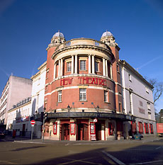
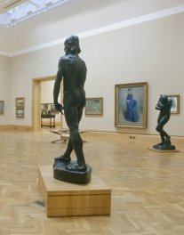
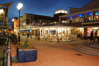

Théâtre et concerts
Les Théâtres de Cardiff proposent un large éventail de spectacles des comédies musicales du West End aux pantomimes de Noël, mettant en scène de nombreuses célébrités, ainsi que le festival international de théâtre musical biennal de Cardiff.

Galeries d’art
La scène artistique florissante de Cardiff, très éclectique, propose aussi bien les œuvres impressionnistes mondialement connues du National Museum que des petites Galeries d'art contemporain international.

Vie nocturne
Des petites salles de concert à taille humaine aux superclubs pouvant accueillir 1,000 spectateurs, la scène musicale de Cardiff est variée et trépidante.
